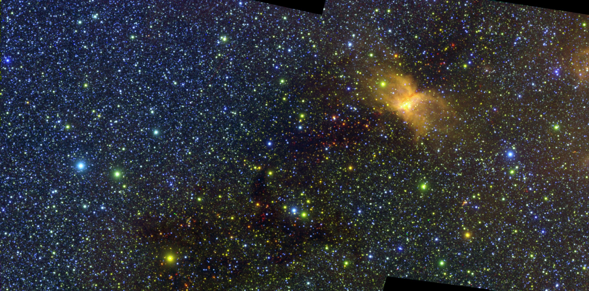

Choose your corner
of the sky.
Visit four curated regions. See what a real infrared exposure looks like, with its date and wavelength in view.
Choose a region ↗
A DIFFERENT LIGHT. A NEW PERSPECTIVE.
Meet the universe beyond visible light. Explore real observations from NASA’s SPHEREx telescope, look across dates, and keep the evidence behind every question.
One sky.
Many wavelengths.
SPHEREx maps the sky in infrared light. SKYSHIFT brings a small, carefully documented selection of its observations into your browser.
Meet SPHEREx ↗YOUR NEXT QUESTION STARTS HERE
No astronomy experience needed.
Start with a field. Let curiosity do the rest.
Visit four curated regions. See what a real infrared exposure looks like, with its date and wavelength in view.
Choose a region ↗Compare the restricted M101 field across two dates. Shared controls keep the view fair; suitability limits stay visible.
Open the comparison ↗Mark a sky coordinate, write a note, and export the data references, settings and checks needed to reopen your view.
See how evidence works ↗OBSERVED. DOCUMENTED. READY TO EXPLORE.
Real, calibrated SPHEREx exposures.
A curated collection, not an all-sky viewer.
Previews show single-band SPHEREx data with an asinh brightness stretch. They are not visible-light photographs. Temporal comparison requires separate checks.
CURIOSITY DESERVES A SOURCE
From NASA/IPAC’s archive to the image on your screen, source identities and processing records stay attached. Inspect the audit, download the evidence, and reproduce the result.
Follow the data ↗Authenticity checked. Scientific approval remains pending.